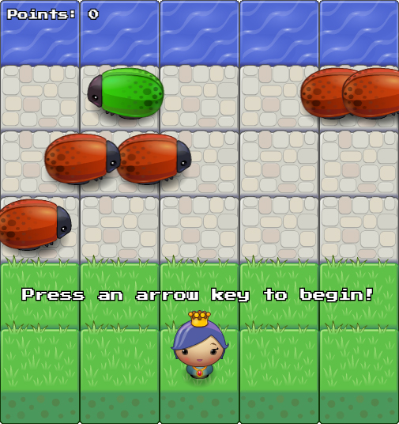
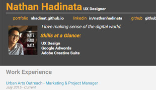
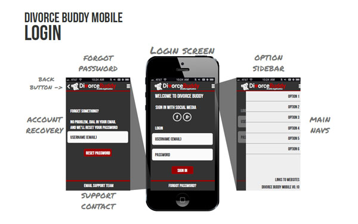
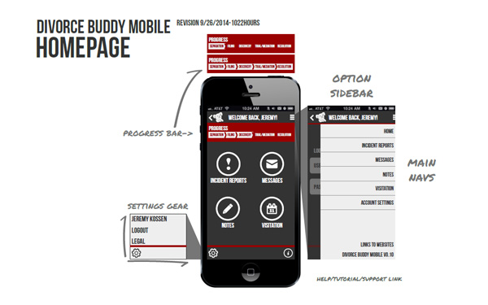
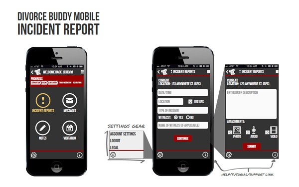
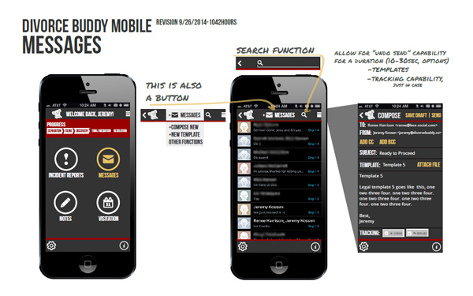

Nate Hadinata
UX Designer

Hello! I'm Nate, and I love making sense of the digital world. I have a background in Digital Marketing and Front-End Web Development, and I use these skills to create an elegant User Experience. I aspire to be an accomplished UX Designer, so that I can design stress-free apps for productivity, community-building, and mental health.
FEATURED PROJECTS
Arcade Game
This is a clone of the game, Frogger, to practice and demonstrate object-oriented, pseudo-classical Javascript. This is the 3rd Project of Udacity's Front-End Web Developer Nanodegree, designed to the following Udacity Rubric.
Features
- Object-oriented, pseudo-classical Javascript
- Game clock engine
- Resource caching
- HTML canvas loops
- Collision detection by bounding boxes
- Point system tied to the Player class
- Event listener for keyboard input
Installation & Play
To run the game, visit nhadinat.github.io/frontend-nanodegree-arcade-game on your web browser. Use the arrow keys on your keyboard to guide the princess to safe waters. Avoid the mean bugs who won't stop for any reason at all!
Good luck! - Nate Hadinata
Javascript Resume
This is a resume template built on Javascript and jQuery. This is the 2nd Project of Udacity's Front-End Web Developer Nanodegree, and my first experience practicing Javascript.
Features
- JSON
- DOM manipulation with jQuery
- Click Metrics
- Google Map Locations
Front-End Web Design
I'm currently building my skills as a Front-End Web Developer, and this portfolio site you are currently browsing is custom built by me. I soon plan to list more websites that I have developed, but in the meantime here are some examples of my website design mockups:
Mobile App Wireframe
Divorce Buddy Mobile App
This is an early mobile app wireframe for Divorce Buddy, a startup solution that seeks to organize and bring accountability to the messy divorce process. I derived inspiration from the Evernote App.
   Wordpress Customization
I've worked extensively with WordPress, installing themes, editing front-end HTML and CSS, publishing content, organizing widgets, and setting up plugins such as reqest forms and instagram feeds. Here is an example of a WordPress site I customized to match the brand of Triumph Protection Group:
Digital Design
I like to approach digital designs with the audience, brand, and marketing campaign in mind. Here are some samples:
Infographics
My first infographic was an undergrad psychology research poster built on a really large PowerPoint file. Thankfully, I grew up to using Illustrator and InDesign.
Brand Development
Defining your audience and brand is where it all begins. During my internship with Saddleback Church, I learned to envision brand in four dimensions: product, identity, experience, and culture. I applied this concept to many ministries in Saddleback Church as well as other organizations. Once you get to the promise statements, you'll have an idea of what your brand and style guide will be: